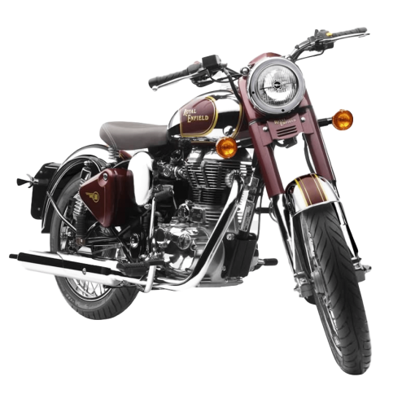

Motorcycle
Harley-Davidson, H-D, o Harley, es un fabricante estadounidense de motocicletas fundado en 1903 en Milwaukee, Wisconsin. Fue uno de los dos principales fabricantes de motocicletas estadounidenses que sobrevivió a la Gran Depresión, junto a la compañía Indian Motorcycle. La compañía ha sobrevivido a numerosos acuerdos de propiedad yacuerdos subsidiarios
Motorcycle
La Indian Motorcycle Manufacturing Company fue fundada como la Hendee Manufacturing Company por George M. Hendee y C. Oscar Hedstrom en Springfield, Massachusetts en 1901, dos años antes que su rival, la legendaria Harley-Davidson Motor Company. Hendee y Hedstrom eran ambos corredores de motocicletas.
Motorcycle
La marca Hanway representada por Motorien está demostrando una gran creatividad, buen gusto y excelentes acabados en todos los modelos que incorpora al catálogo europeo. Su producto estrella, la Raw, que ahora toma la denominación Raw Café, ha conseguido ser el año pasado la moto retro más vendida del mercado con una relación precio/calidad más que atractiva.
Motorcycle
Royal Enfield nace en Inglaterra en 1891 enfocándose principalmente en la producción de bicicletas.
Motorcycle
Vespa es un género de himenópteros eusociales conocidos popularmente como avispas o avispones, que cuenta con veintidós especies, repartidas sobre todo por el Asia tropical
Motorcycle
El nombre Vulcan es usado por Kawasaki para su línea de motocicletas custom o cruiser, desde 1984.